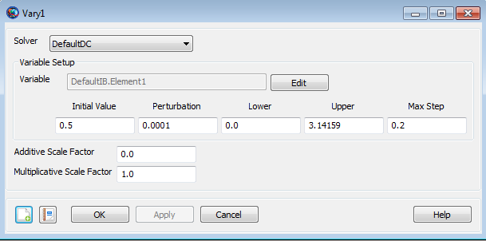

Vary — Specifies variables used by a solver
VarySolverName(<UserSelectedControl>=InitialGuess, [{[Perturbation=Arg1], [MaxStep=Arg2], [Lower=Arg3], [Upper=Arg4], [AdditiveScalefactor=Arg5], [MultiplicativeScalefactor=Arg6]}])
The Vary command is used in conjunction with either the Target or the Optimize command. The Vary command defines the control variable used by the targeter or optimizer. The Target or Optimize sequence then varies these control variables until certain desired conditions are met. Every Target or Optimize sequence must contain at least one Vary command.
See Also: DifferentialCorrector, FminconOptimizer, VF13ad, Target, Optimize
| Option | Description | ||||||||||
|---|---|---|---|---|---|---|---|---|---|---|---|
| AdditiveScaleFactor | Number used to nondimensionalize the independent variable. The solver sees only the nondimensional form of the variable. The nondimensionalization is performed using the following equation: xn = m (xd + a). (xn is the non-dimensional parameter. xd is the dimensional parameter. a= additive scale factor. m= multiplicative scale factor.) Note the nondimensionalization process occurs after the perturbation to the control variable has been applied. Thus, xd represents a perturbed control variable.
| ||||||||||
| InitialGuess | Specifies the initial guess for the selected Variable
| ||||||||||
| Lower | The Lower option (only used for the Differential Corrector and fmincon solvers) is used to set the lower bound of the control Variable. Lower must be less than Upper.
| ||||||||||
| MaxStep | The MaxStep option (only used for the DifferentialCorrector and VF13ad solvers) is the maximum allowed change in the control variable during a single iteration of the solver.
| ||||||||||
| MultiplicativeScaleFactor | Number used to nondimensionalize the independent variable. The solver sees only the nondimensional form of the variable. The nondimensionalization is performed using the following equation: xn = m (xd + a). (xn is the non-dimensional parameter. xd is the dimensional parameter. a= additive scale factor. m= multiplicative scale factor.) Note the nondimensionalization process occurs after the perturbation to the control variable has been applied. Thus, xd represents a perturbed control variable.
| ||||||||||
| Perturbation | The Perturbation option (only used for the DifferentialCorrector and VF13ad solvers) is the perturbation step sized used to calculate the finite difference derivative
| ||||||||||
| SolverName | Allows you to choose which solver to assign to the Vary command. In the context of a Target sequence, you will choose a DifferentialCorrector object. In the context of an Optimize sequence, you will choose either a FminconOptimizer or VF13ad object.
| ||||||||||
| Upper | The Upper option (only used for the DifferentialCorrector and FminconOptimizer solvers) is used to set the upper bound of the control Variable. Lower must be less than Upper.
| ||||||||||
| UserSelectedControl | Allows you to select any single element user-defined
parameter, except a number, to vary. For example,
|
The Vary command, only valid within either a Target or an Optimize sequence, is used to define the control variables which will be used to solve a problem. The Vary command dialog box is shown below.
|  |
The Vary command dialog box allows you to specify
Choice of Solver (a differential corrector if using a Target sequence or an optimizer if using an Optimize sequence).
Control Variable object. To define the control Variable used in the Vary command, click the Edit button to bring up the ParameterSelectDialog as shown below. Use the arrow to select the desired object and then click OK.
Initial Value for the control variable object.
Perturbation Step size used as part of the finite differencing algorithm. As noted in the Remarks section, this field is only used if the solver chosen is a differential corrector or a VF13AD optimizer.
Lower allowed limit for the converged control variable object. As noted in the Remarks section, this field is only used if the solver chosen is a differential corrector or a fmincon optimizer.
Upper allowed limit for the converged control variable object. As noted in the Remarks section, this field is only used if the solver chosen is a differential corrector or a fmincon optimizer.
Maximum step size (Max Step), per iteration, for the control variable object. As noted in the Remarks section, this field is only used if the solver chosen is a differential corrector or a VF13AD optimizer.
Additive Scale Factor used to scale the control variable object.
Multiplicative Scale Factor used to scale the control variable object.
The Vary command is designed to work with all three of the GMAT targeters and optimizers (Differential Corrector, fmincon, and VF13AD). The solvers, which are developed by different parties, all work slightly differently and thus have different needs. The table below shows which command options are available for a given solver.
| Differential Corrector | fmincon | VF13AD | SNOPT | |
|---|---|---|---|---|
| SolverName | X | X | X | X |
| Variable | X | X | X | X |
| InitialGuess | X | X | X | X |
| AdditiveScaleFactor | X | X | X | X |
| MultiplicativeScaleFactor | X | X | X | X |
| Lower | X | X |
| X |
| Upper | X | X |
| X |
| Perturbation | X |
| X |
|
| MaxStep | X |
| X |
|
The Vary syntax allows you to specify the value of an option even if a particular solver would not use the information.
As shown in the example below, the Vary command accepts repeated parameters.
Vary DefaultDC(ImpulsiveBurn1.Element1 = 2, ...
{Perturbation = 1e99, Perturbation = .001}) The accepted best practice is not to repeat parameters in any given command. However, for the Vary command, if you accidentally sets the same parameter multiple times, the last setting takes precedence. Thus, in the example above, the perturbation step size is set to 0.001.
If you wish to use thruster parameters, such as thrust direction, in a Vary command, then you must reference the cloned (child) object directly. In the example below, we first show syntax, using the parent object that does not work. We then show the correct syntax using the cloned (child) object.
%Referencing the parent object, thruster1, does not work.
Vary DC1(thruster1.ThrustDirection1 = 0.4)
Vary DC1(thruster1.ThrustDirection2 = 0.5)
%Referencing the cloned (child) object, Sc.thruster1, does work.
Vary DC1(Sc.thruster1.ThrustDirection1 = 0.4)
Vary DC1(Sc.thruster1.ThrustDirection2 = 0.5) | Target command | A Vary command only occurs within a Target or Optimize sequence. |
| Optimize command | A Vary command only occurs within a Target or Optimize sequence. |
| Achieve command | The Achieve command, used as part of a Target sequence, specifies the desired result or goal (obtained by using the Vary command to vary the control variables). |
| NonlinearConstraint command | The NonlinearConstraint command, used as part of an Optimize sequence, specifies the desired result or goal (obtained by using the Vary command to vary the control variables). |
| Minimize command | The Minimize command, used as part of an Optimize sequence, specifies the desired quantity to be minimized (obtained by using the Vary command to vary the control variables). |